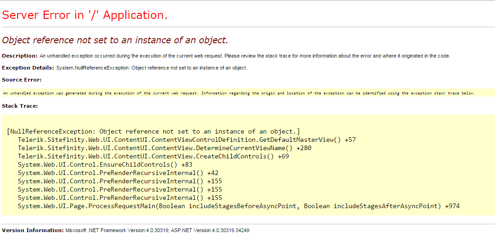

Of Types and Measures
Kevin Feasel (@feaselkl)https://csmore.info/on/types
Who Am I? What Am I Doing Here?


Types and Measures
All programming languages have types. Some languages have more fleshed-out type systems than others.
Not all languages have the concept of a unit of measure.
Motivation
My goals in this talk:
- Give you a better understanding of types.
- Walk through benefits of the F# type system, including custom types.
- Help you understand sum types versus product types.
- Explain units of measure and where they can help.
Agenda
- The Types of Types
- Product Types
- Sum Types
- The Unit Type
- Custom Types
- Units of Measure
What is a Type?
At its core, a type is a restriction limiting you to certain values.
The int type lets you use valid integers (typically within 4 bytes), so "Bob" will never be a proper integer but 3 is.
Why Have Types?

Wat
Types
With C#, we are used to defining types.
Unless we don't want to.
Types
With F#, we are used to not defining types.
Unless we want to.
Option Types
Option Types
The easiest way to avoid null pointer references? Avoid null!
F# has the Option type, which may be either Some {object} or None. Therefore, it always has a value and cannot be null.
Demo Time
Agenda
- The Types of Types
- Product Types
- Sum Types
- The Unit Type
- Custom Types
- Units of Measure
Product Types
Product types are the combination of multiple values. The key product types we'll look at are tuples and record types.
Tuples
Tuples exist in F# and C# both, and with the System.ValueTuple library, C# gets many of the in-built F# advantages around tuples.
We write a tuple as a comma-separated list, like (1, 2, 3, "Dog") but the complier interprets it as (int * int * int * string).
Tuples and the BCL
A tuple is a thing as much as it is a collection of things.
If you are calling a C# (or VB.Net) function from F#, you may only pass in one thing. If the BCL method has multiple required inputs, you must pass in a tuple.
Record Types
Record types are product types with labels for each input. The "development feel" of a record type is similar to that of a struct over a class, as record types do not have associated methods, accessors, or mutators.
C# 9 has introduced record types.
Demo Time
Agenda
- The Types of Types
- Product Types
- Sum Types
- The Unit Type
- Custom Types
- Units of Measure
Sum Types
In contrast to product types, which are the product of multiple inputs, sum types are the sum of multiple inputs.
Another way to think of this is, product types chain together AND operations, while sum types chain OR operations.
Discriminated Union
In F#, the sum type is also known as a discriminated union. We define a thing as one of the valid set.
Why Sum Types?
Sum types replace if-else logic and try-catch blocks. Suppose we have a web request.
Why Sum Types?
Demo Time
Agenda
- The Types of Types
- Product Types
- Sum Types
- The Unit Type
- Custom Types
- Units of Measure
The Unit Type
Unit is the representation of a category with a single element.
Values go here to die.
Why Have a Unit Type?
Unit guarantees that our expressions always return a value. This is part of the definition of an expression. The unit type informs us that we don't care about the value, per se, but it is still a value.
C# does not have a unit type and so void versus non-void methods need to remain separate. This is why we have both Func and Action.
Demo Time
Agenda
- The Types of Types
- Product Types
- Sum Types
- The Unit Type
- Custom Types
- Units of Measure
Custom Types
Sometimes the built-in types are too lax. For example, we can represent a set of prime numbers as an array of integers, but that won't help us avoid slipping in a 4.
This is where custom types come into play. In C#, you can build a class which behaves like a custom type would.
Benefits
Additional rules narrow the range of acceptable values beyond what built-in types can handle.
Ensure at compile time that any value of this custom type is guaranteed to follow your rules.
Benefits
Prevent sending in the wrong parameter.
Ever done this before?
That's because x and y are both integers, so the compiler can't protect us.
Benefits
But this is a lot harder to mess up:
Hard to create a class for every possible field, however.
Demo Time
Agenda
- The Types of Types
- Product Types
- Sum Types
- The Unit Type
- Custom Types
- Units of Measure
Units of Measure
Units of measure are not available in C#. These allow the F# compiler to prevent you from making units-based mistakes, like adding feet and pounds.
Units of Measure
With units of measure, we can:
- Define measures
- Define conversion factors between units
- Add and subtract values of the same unit
- Multiply and divide values of different units
- Solve physics problems
Classic Physics Problem

Less Classic Physics Problem

Demo Time
Wrapping Up
F# extends the native .NET type system. Important things we covered today include:
- Option types
- Product types (tuples and records)
- Sum types (discriminated unions)
- Unit type
- Building custom types
- Units of measure
Wrapping Up
To learn more, go here:
https://csmore.info/on/types
And for help, contact me:
feasel@catallaxyservices.com | @feaselkl
Catallaxy Services consulting:
https://CSmore.info/on/contact